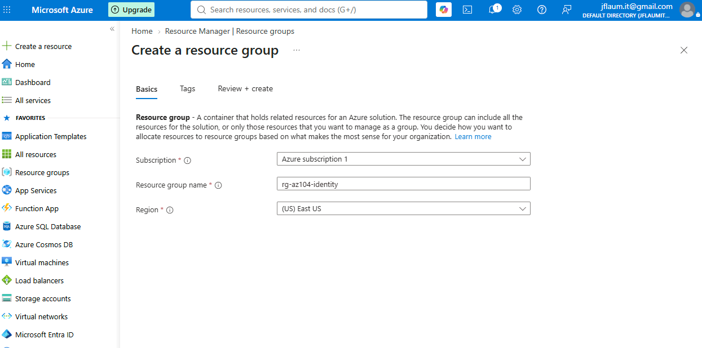
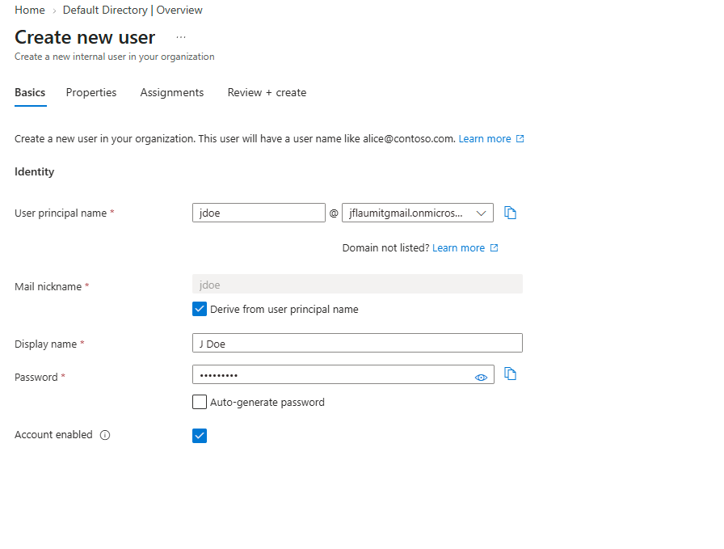
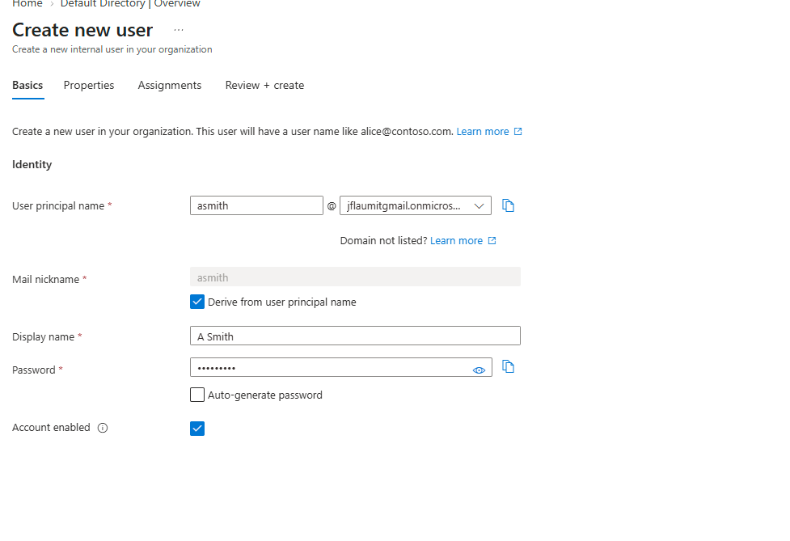
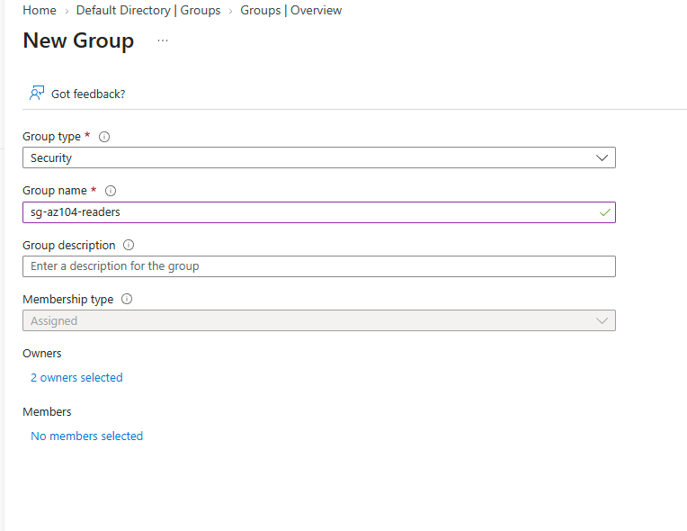
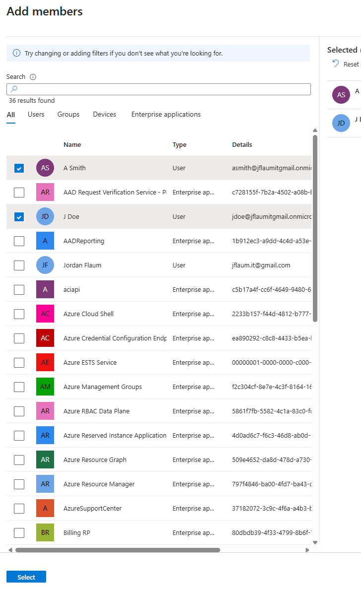
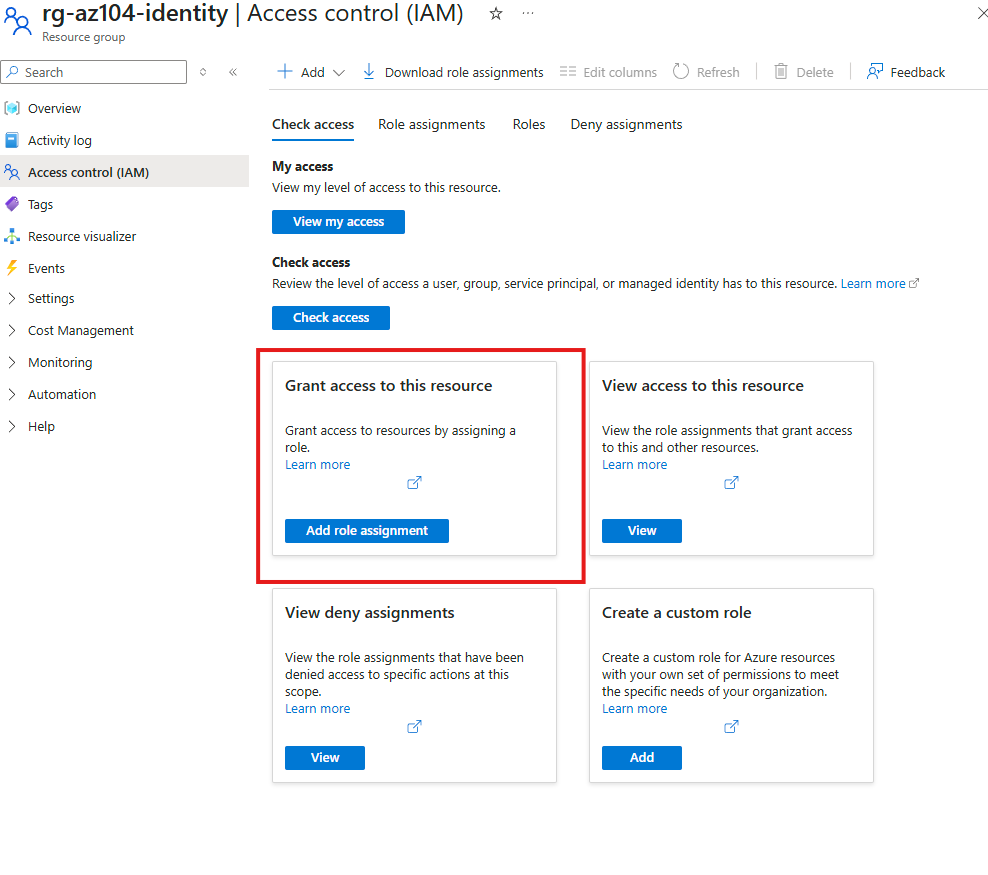
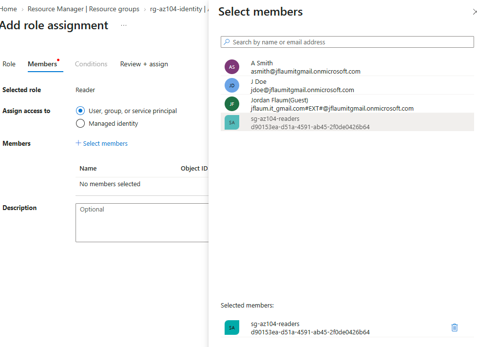
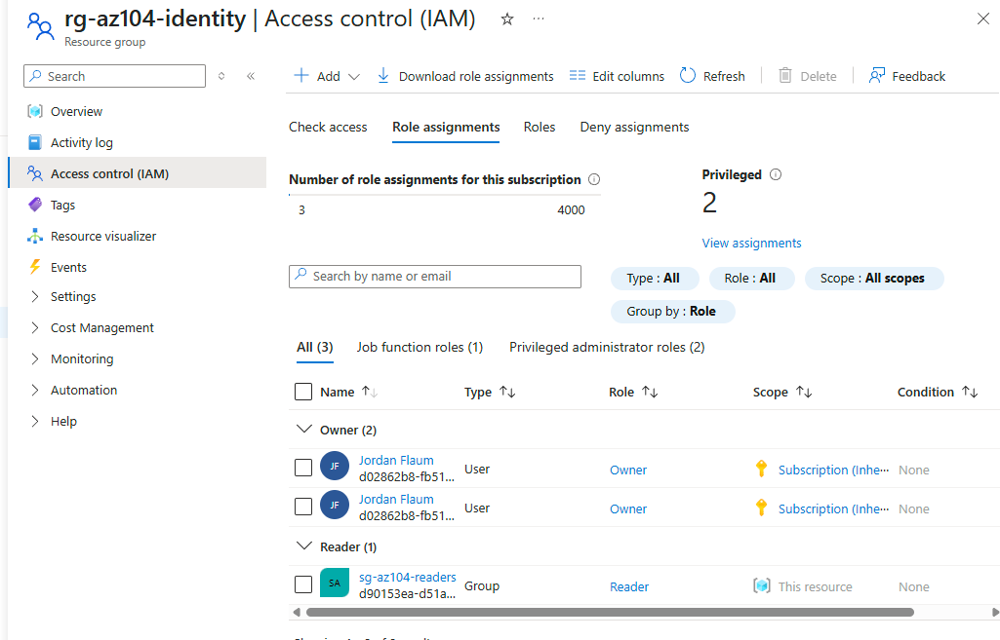
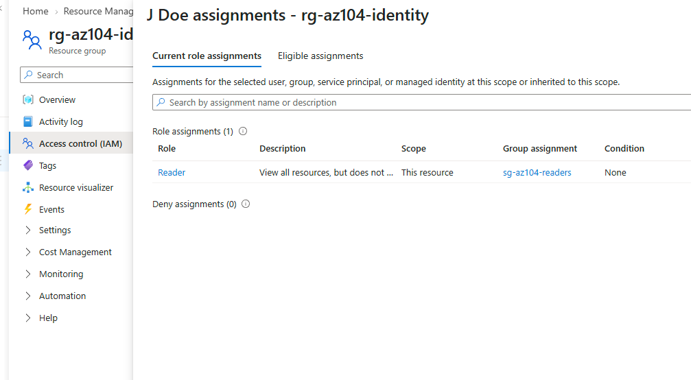

Creating Microsoft Entra ID users, organizing them into a security group, and assigning a role to the group rather than to individuals. This is the identity foundation the rest of the AZ-104 labs build on, and the group-based pattern is the practice tested most directly in the Identities and Governance domain.
Built out identity and access management using the group-based pattern instead of assigning roles directly to users.









"If you can build it again tomorrow without looking at yesterday's code, you've learned it. If you need to copy and paste it again, you've only completed a tutorial."
I am learning Infrastructure as Code deliberately, specifically Terraform and Bicep, rather than treating them as copy-paste snippets. The code below reflects actual understanding of each resource, not just reproduced boilerplate.
Entra ID users and groups are managed through Microsoft Graph rather than Azure Resource Manager, so Bicep is used here only for the resource group and the role assignment. The group itself is created ahead of time through the Azure CLI or PowerShell, and its object ID is passed in as a parameter.